🧪 Running the Experiments
This project includes multiple experiments to evaluate the performance and accuracy of our Python implementation of SilkMoth.
📊 1. Experiment Types
You can replicate and customize the following types of experiments using different configurations (e.g., filters, signature strategies, reduction techniques):
- String Matching (DBLP Publication Titles)
- Schema Matching (WebTables)
- Inclusion Dependency Discovery (WebTable Columns)
Exact descriptions can be found in the official paper.
📦 2. WebSchema Inclusion Dependency Setup
To run the WebSchema + Inclusion Dependency experiments:
- Download the pre-extracted dataset from
📥 this link. - Place the
.jsonfiles in thedata/webtables/directory
(create the folder if it does not exist).
🚀 3. Running the Experiments
To execute the core experiments from the paper:
python run.py
📈 4. Results Overview
We compared our results with those presented in the original SilkMoth paper.
Although exact reproduction is not possible due to language differences (Python vs C++) and dataset variations, overall performance trends align well.
All the results can be found in the folder results.
The left diagrams are from the paper and the right are ours.
💡 Recent performance enhancements leverage
scipy’s C-accelerated matching, replacing the originalnetworkx-based approach.
Unless otherwise specified, the diagrams shown are generated using thenetworkximplementation.
🔍 Inclusion Dependency
Goal: Check if each reference set is contained within source sets.
Filter Comparison
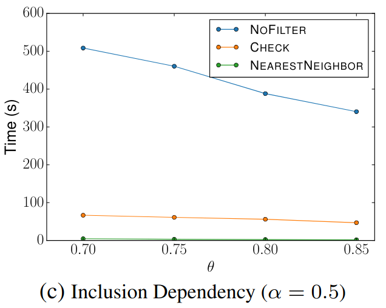 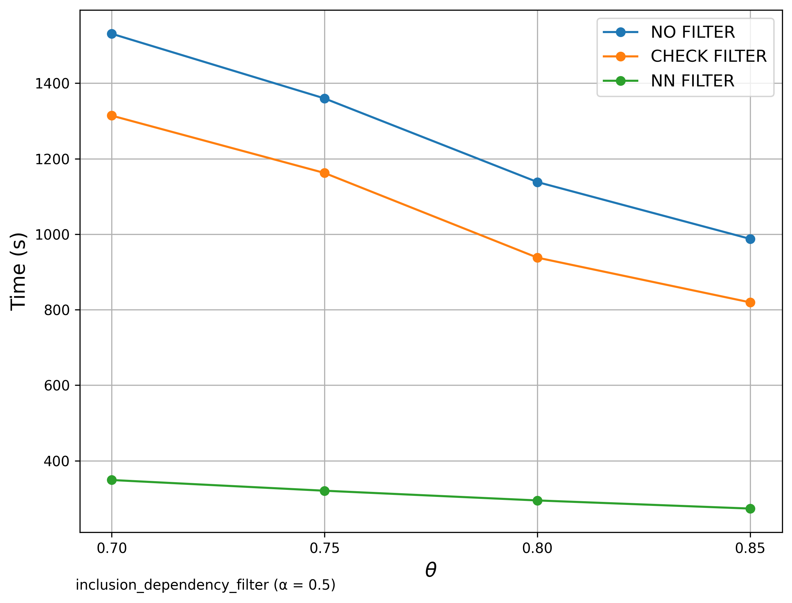
Signature Comparison
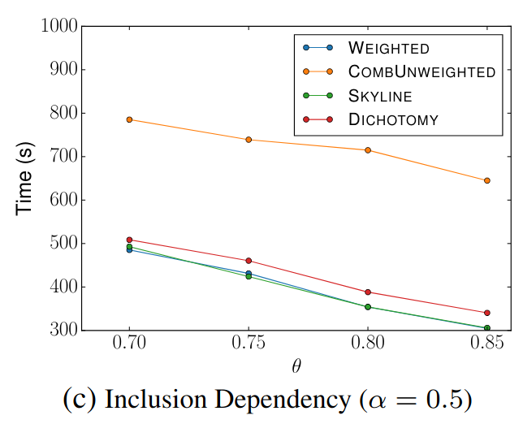 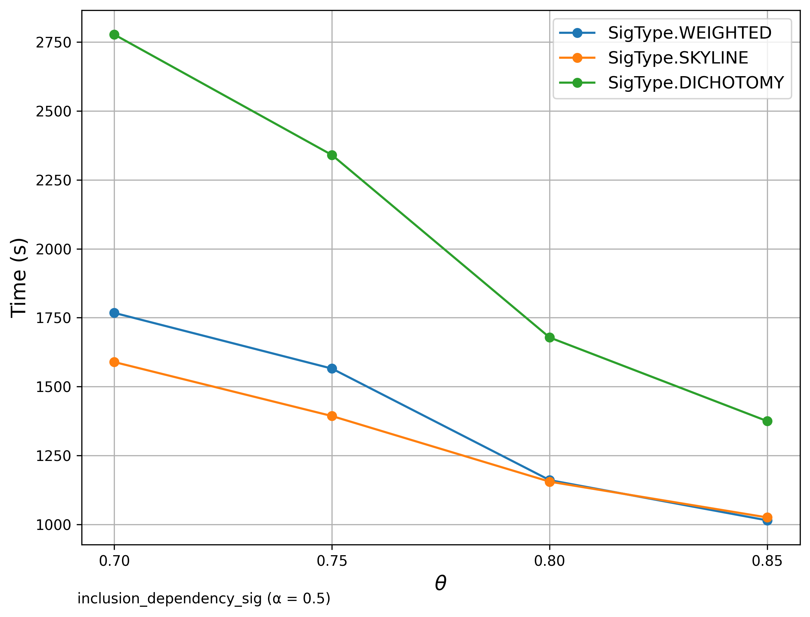
Reduction Comparison
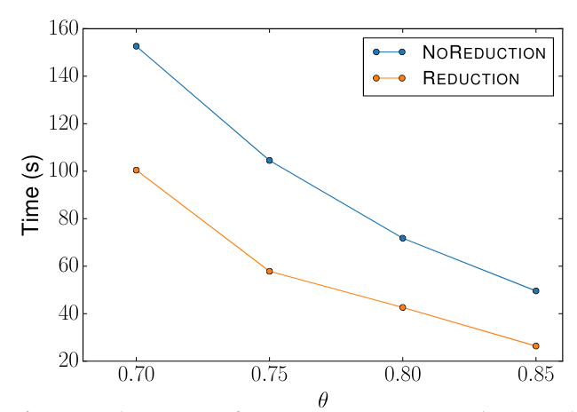

Scalability
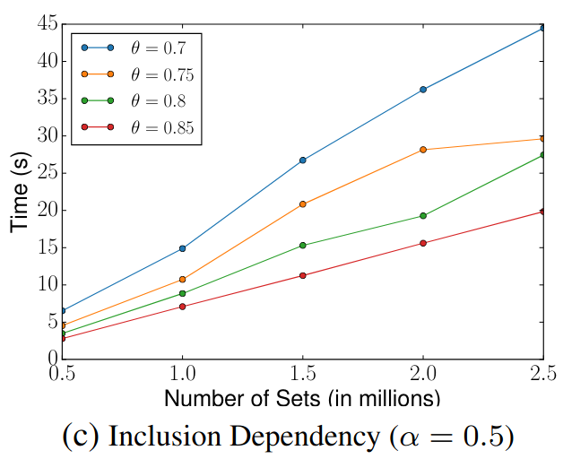

🔍 Schema Matching (WebTables)
Goal: Detect related set pairs within a single source set.
Filter Comparison
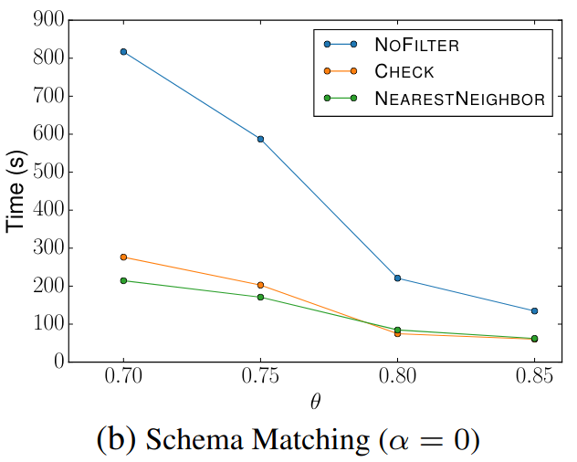 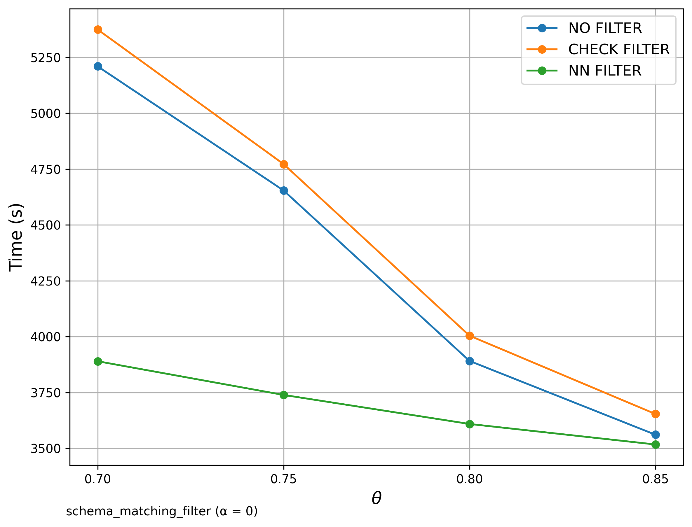
Signature Comparison
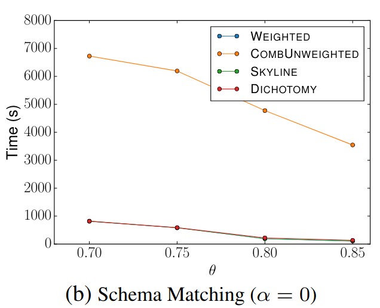 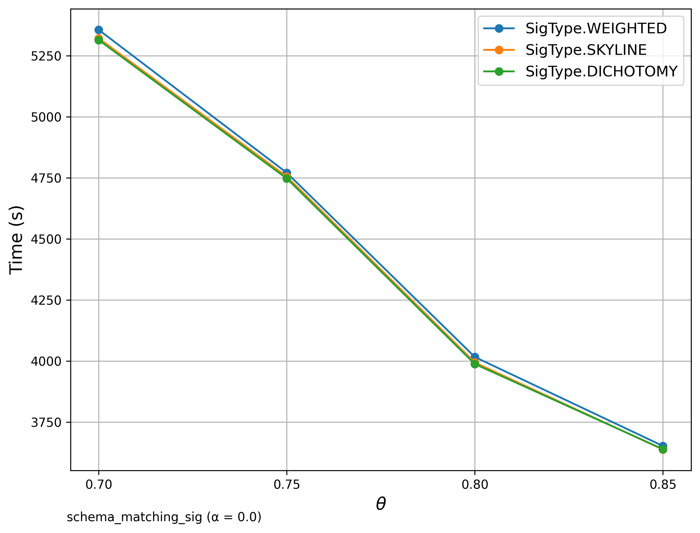
Scalability
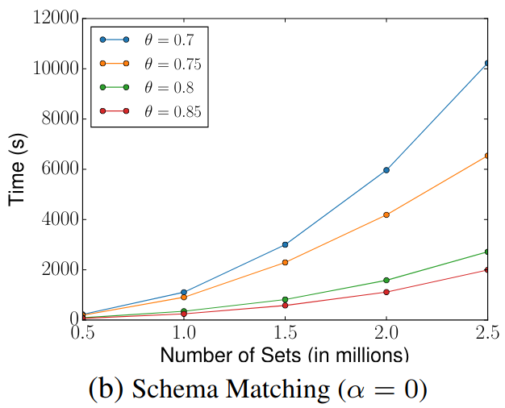

🔍 String Matching (DBLP Publication Titles)
Goal: Detect related titles within the dataset using the extended SilkMoth pipeline based on edit similarity and q-gram tokenization. SciPy was used here.
Filter Comparison
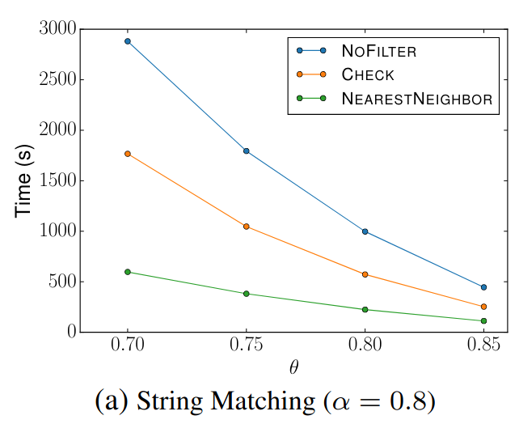 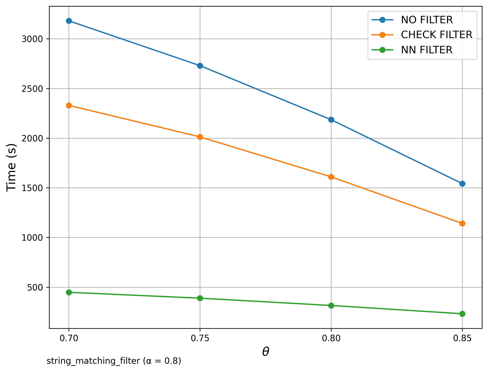
Signature Comparison
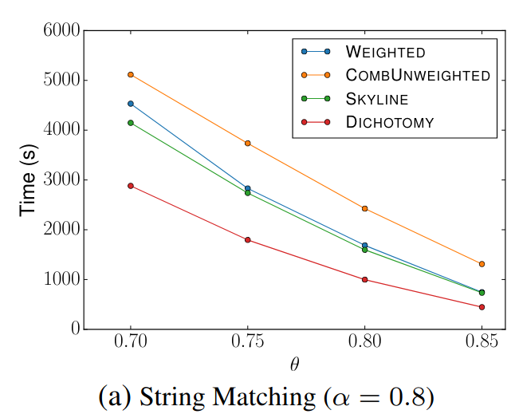

Scalability
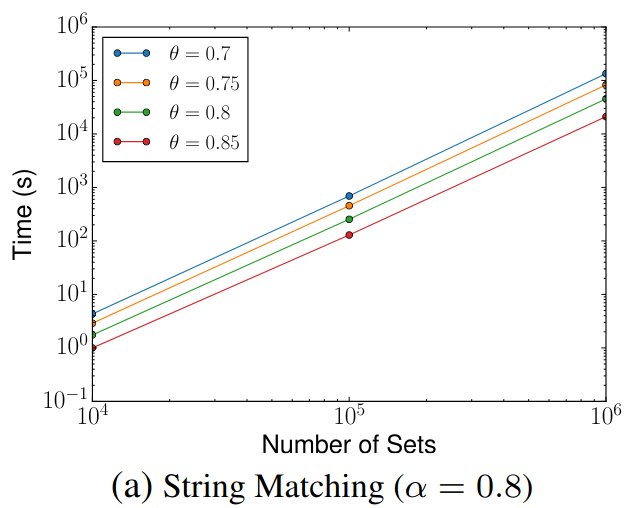 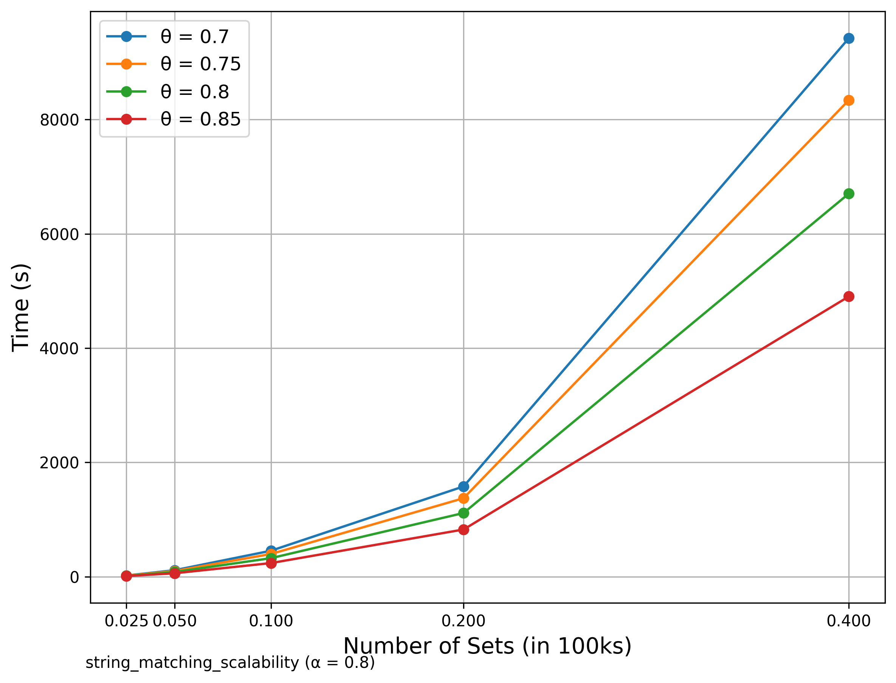
🔍 Additional: Inclusion Dependency SilkMoth Filter compared with no SilkMoth
In this analysis, we focus exclusively on SilkMoth. But how does it compare to a brute-force approach that skips the SilkMoth pipeline entirely? The graph below shows the Filter run alongside the brute-force bipartite matching method without any optimization pipeline. The results clearly demonstrate a dramatic improvement in runtime efficiency when using SilkMoth.

🔍 Additional: Schema Matching with GitHub WebTables
Similar to Schema Matching, this experiment uses a GitHub WebTable as a fixed reference set and matches it against other sets. The goal is to evaluate SilkMoth’s performance across different domains. Left: Matching with one reference set. Right: Matching with WebTable Corpus and GitHub WebTable datasets. The results show no significant difference, indicating consistent behavior across varying datasets.
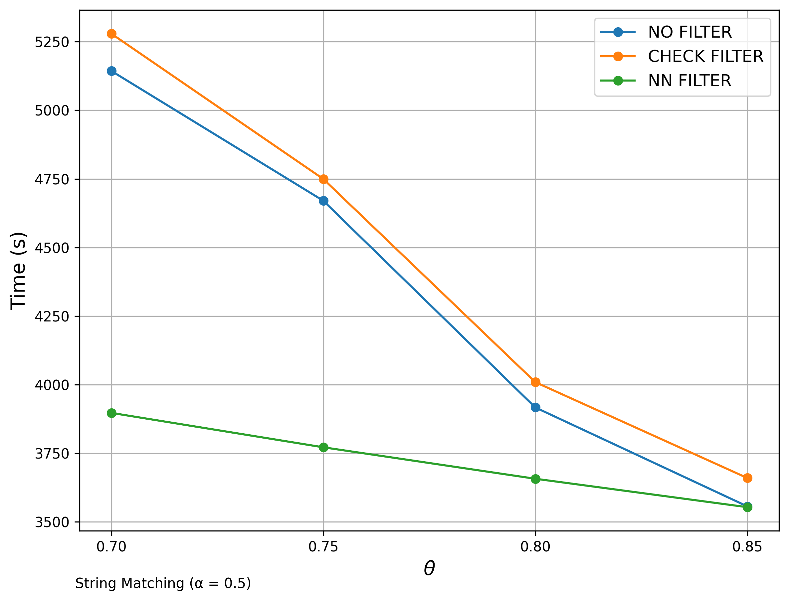